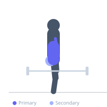
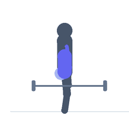

Exercise guide / Zercher Carry
Zercher Carry
A loaded carry performed with the barbell cradled in the elbow crooks in the Zercher position. The Zercher carry uniquely combines anterior core bracing, bicep and forearm endurance, and lower body locomotion, making it a comprehensive full-body conditioning and strength exercise.
Primary muscles
biceps brachii long head
biceps brachii short head
transverse abdominis
Secondary muscles
erector spinae
gluteus maximus
internal oblique
Stabilizers
rectus femoris
gastrocnemius medial
flexor carpi radialis
Equipment
Standard Barbell
Optional
Power Rack (Squat Cage)


Starting position
- Cradle a barbell in the elbow crooks with forearms parallel to the floor. Stand tall and walk.
Setup
- Set a barbell at waist height in a rack. Cradle it in the elbow crooks, secure the grip, then step back to begin walking.
Steps
- Step 1: Brace the core hard and stand tall with the bar cradled in the elbows.
- Step 2: Walk forward for the prescribed distance with controlled steps.
- Step 3: Keep the torso upright — do not allow excessive forward lean.
- Step 4: At the end of the distance, carefully return the bar to the rack.
Coaching cues
- Chest up, elbows forward
- Walk tall and breathe
Breathing
- Breathe steadily throughout the walk. Use short rhythmic breaths.
Range of motion
- Walk for 10-30 meters or the prescribed distance while maintaining the Zercher position.
Tempo
- Continuous walking
Common mistakes
- Allowing the torso to fold forward under the weight
- Taking overly long strides that destabilize the carry
Safety
- The bar will press into the forearms — use padding if skin tenderness is an issue
- Return the bar to the rack safely — do not drop it
Training
- strength: 3–8 reps
- endurance: 15–25 reps
- strength: 3–5 sets
- endurance: 2–3 sets
- Rest: {'strength': 180, 'endurance': 45}